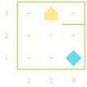
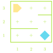

Instructor: Fred Agbo
Slides by: Jed Rembold
August 28, 2023
To gain the skills, knowledge, and confidence necessary to write, test, and debug Python programs requiring several hundred lines of code.
Doing so will require that students be able to:
| Participation | 5% |
| Problem Sets | 20% |
| Projects | 30% |
| Midterm | 20% |
| Final Exam | 25% |
| | A submission so good it “makes me weep” |
| | Exceeds requirements |
| | Satisfies all assignment requirements |
| | Meets most requirements, but some issues |
| | Some more serious problems evident |
| | Even worse… |
| | Why even bother turning this in? |
```this is formatted nicely as code```
As we mentioned before, Karel is a simple robot, and can really only do 4 potential actions
| Command | Action |
|---|---|
move() |
Moves Karel forward one corner in whatever direction they are facing |
turn_left() |
Rotates Karel 90 deg counter-clockwise |
pick_beeper() |
Picks up a beeper on the ground |
put_beeper() |
Places a beeper on the ground |
Our commands are just sequences of these actions

def main():
move()
turn_left()
turn_left()
turn_left()
move()
turn_left()
move()
turn_left()
turn_left()
turn_left()
move()
pick_beeper()
turn_left()
turn_left()
turn_left()
move()
move()
put_beeper()